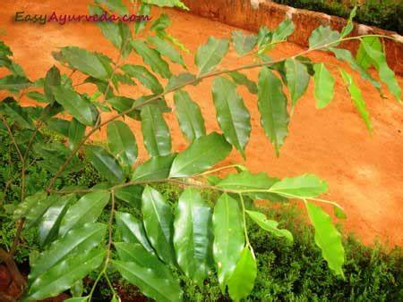

Basonym of Drug
Agaru
Main Synonym
Regional Name
- Assamese: Agaru
- Bengali: Agaru, Agarkashtha, Agar Chandan
- English: Eagle Wood
- Gujarati: Agar
- Hindi: Agar
- Kannada: Krishna Agaru
- Malayalam: Akil
- Marathi: Agar
- Punjabi: Ooda, Pharsi
- Tamil: Akil kattai
- Telugu: Agaru
- Urdu: Ood Hindi, Agar
Botanical Name
Aquilaria agallocha Roxb
Family
Thymelacaceae
Classification (Gana)
As per Acharya Charak - Sitaprasamana, Svasahara, Sirovirecana, Tikta Skanadha
As per Acharya Sushrut - Salasaradi, Eladi, Slesmasamsamana
As per Acharya Vagbhatta - Salasaradi, Eladi
External Morphology
A large evergreen tree
Useful Parts
- Heartwood
- Aromatic resinous wood oil
Important Phytoconstituent
Essential Oil, Aquillochin
Rasa Panchak
- Rasa: Katu, Tikta
- Guna: Laghu, Snigdha, Ushna
- Virya: Ushna
- Vipaka: Katu
Action
Kaphavatahara, Tvacya (Good for Skin), Shirovirechana (Useful in Nasya), Shitapraman (Warming effect)
Therapeutic Indication
- Kustha (Skin Disease)
- Visharoga (Toxic conditions)
- Shita (Chills)
- Karna roga (Ear Disease)
- Shwasa (Respiratory disorder)
Therapeutic Uses
- The powder of Agaru mixed with honey is taken to check the hiccough.
- Agaru powder mixed with honey relieves cough.
- Agaru oil is applied on skin diseases such as ringworm etc.
Dose
- Powder: 1-3 gm
- Oil: 1 to 5 drops
Formulations
- Agurvadi Tail
- Anu Taila
- Candanadi Taila
- Khadiradi Gutika
Adverse Effect
Not Known